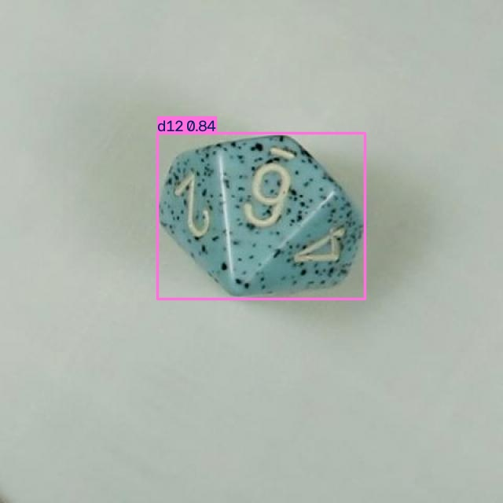
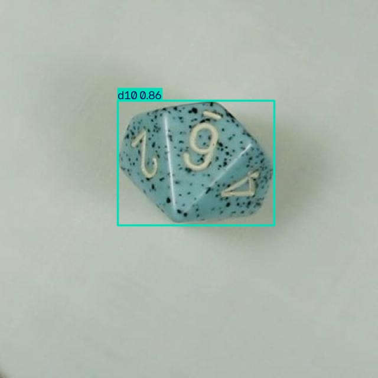

I'm building a robot manipulation research platform on Isaac Sim / Isaac Lab.
Right now that means one arm — a Franka Panda — one object class (a set of seven TTRPG dice), and one task: find the die I ask for and pick it up. The video on the right is that task running end to end: a trained detector finds the commanded die on a five-die table, depth deprojection turns the detection into a 3D target, and a staged inverse-kinematics controller descends, grasps, and lifts it. Four of the five die types succeed. The fifth, the d4, doesn't, and I explain why further down.
Underneath the demo is a longer thread of RL experiments on the same platform — most of them documented failures on the way to two real wins — and a synthetic-to-real object detector I built from a headless Blender pipeline. This page is a status dashboard across all of it: what works, what doesn't yet, and the numbers behind both.
Where things stand
Four numbers I can actually point to a source for
Demo
Picking the die I ask for
This part is already written up in full on the live site's Franka write-up — I'm showing two of the five clips here for context before the new material below. The controller is scripted, not learned: a trained YOLO detector plus depth deprojection gives the 3D target, and a staged differential-IK sequence does the grasp. What's being tested is the platform and the perception bridge, not a learned policy.
New since the last write-up
Getting a policy to lift a die at all
The demo above is scripted, not learned — Phase I of this project is a trained
policy that can grasp and lift, and that's turned out to be its own project. I
swapped the validated Franka lift recipe (direct joint-position actions, no IK)
onto the physics-baked d20 die and it failed completely: 1500 iterations,
lifting_object never left its 0.12 spawn-artifact floor, position
error never beat the do-nothing baseline. The recipe itself wasn't broken — the
pre-authorized fallback, the same config with NVIDIA's DexCube swapped back in,
trained a clean lift and carry in the same 1500 iterations. So the die asset was
the variable, and I bisected it.
Ladder result Shape gates grasp discovery. Size makes it worse. Mass and the asset pipeline are both cleared.
I ran the same object at three seeds per rung, holding size and mass fixed and swapping one variable at a time against the 0.216kg / 48mm baseline:
Mass — d20 at 30.3mm, mass raised 21.6x (0.01kg → 0.216kg):
0/3, all three runs nearly identical failure curves. Mass isn't the gate.
Size — d20 scaled to 48mm, mass pinned: 1/3 (the seed-123
run above). Formally a fail under my own 2/3 rule, but the split itself is
the finding: 30.3mm is a deterministic 0/4 across every full run I have at
that size; 48mm is "sometimes discoverable." Size is load-bearing.
Shape — a cube from my own bake pipeline at the same 48mm /
0.216kg: 3/3, matching DexCube's own reliability. This also clears the bake
pipeline itself — it's not producing broken assets, since a policy handles
the baked cube expertly once it finds the grasp.
Reading it together: a flat-faced object gives a clumsy early contact somewhere to land — a wide antipodal-grasp basin. A near-spherical polyhedron rolls away from a clumsy contact and offers the policy no parallel faces to discover, and at 30mm that first rewarding grasp is, in three seeds of evidence, never found. That's grasp-affordance scarcity as an exploration failure, not a physics bug — consistent with what I found in the manipulation-RL literature on shape-conditioned grasp discovery (Zhou & Held 2022; Danielczuk et al.) before I ran this ladder.
docs/superpowers/plans/2026-07-12-asset-bisect-report.md — full per-seed table and run paths
New since the last write-up
Fixing the d8/d10 sim-to-real collapse — and the regression that came with it
The detector's original real-photo failure (documented on the dice-detection page) was a systematic classification drift up the shape-complexity ladder: d8 and d10 kept getting called d12 or d20 on real close-up photos. My working hypothesis was that the synthetic scenes render dice at realistic relative sizes in multi-die tabletop shots, so apparent in-frame size becomes a class cue the model leans on — and real test photos are almost all single-die close-ups, where every die looks "big." I pre-registered two thresholds before testing it: real mAP50 on d8 and d10 clearing 0.40 (primary), and d12/d20 not regressing (guard).
Both pre-registered thresholds passed: d8 went 0.090 → 0.442 and d10 went 0.097 → 0.534, both past the 0.40 bar, and d12/d20 held or improved slightly (0.946, 0.907). That's real support for the size-confound hypothesis, not just a number that moved.
It also cost me d6, which the guard didn't cover: 0.519 → 0.275. I looked at it rather than filing it as noise — the confusion matrices show d6's own false- positive rate actually fell; what happened is d6 recall collapsed because d10 started absorbing d6 detections that used to scatter across d10/d12/d20 (d6→d10 confusion rose from 6% to 50%). d10 didn't just get better at being itself, it got more aggressive at claiming ambiguous cases, and d6 lost that fight. That's the open item for the next data-generation pass, not something I'm rounding off.
vision/docs/results/2026-07-dice-detector-v1/eval_s_v2.md, vision/docs/results/2026-07-dice-detector-v1/d6_regression_analysis.md


What actually changed
A 3,000-image close-up slice added to training, with camera distance decoupled from class — every die type now appears at every apparent scale, not just its physically realistic one in a multi-die tabletop shot. Nothing else in the generator or training recipe changed.
How I run this
Hypothesis first, pre-registered thresholds, someone else reviews the diff
This project runs on a two-tier process. Anything that changes what the policy can perceive, do, or be scored on — a new action space, a new curriculum, a new reward term — gets a real hypothesis, grounded in background research, before I write a spec. Reward-weight tuning inside an already-validated mechanism runs on a faster hill-climbing loop instead; that distinction is deliberate, not an excuse to skip rigor where it matters. Three examples from the work above:
01 The asset-bisect ladder
Before touching the d20 asset, I fixed the protocol: three seeds per
rung, a verdict requires 2 of 3, and the authoritative metric
(position_error against the do-nothing baseline) is decided
before any run starts, not chosen afterward to fit the result. Rung 2
(size) technically failed that rule at 1/3 — I reported it as a fail and
wrote up the split, because the split was more informative than forcing
a clean pass/fail label onto it.
02 The datagen-v2 verdict
Two thresholds, written down before training: d8/d10 real mAP50 past 0.40, d12/d20 not regressing. Both passed. The d6 regression the guard didn't cover doesn't get folded into a "success" narrative — it's a separate open item with its own root-cause note.
03 A caught defect before it cost a training run
On an earlier touch-then-goal reward redesign, a whole-branch review caught a real bug before any GPU time was spent on it: a running-max milestone mechanism that would have banked partial credit at the first waypoint and then paid nothing for the rest of the episode — almost certainly reproducing an earlier "reach, then freeze" failure mode and getting misread as "even the easier task fails." Independently re-derived, not just trusted, and fixed before training started.
Under the hood
Stack
Simulation
Isaac Sim / Isaac Lab, Franka Panda (previously an AR4 hobby arm — I moved off it after repeated evidence the grasp-discoverability problem traced to AR4-asset defects, not the RL approach).
RL
rsl_rl PPO, direct joint-position and task-space action variants, staged/gated reward shaping where a plain weighted sum proved exploitable.
Perception
YOLO11s trained on procedurally generated data, depth deprojection with a geometric-plausibility filter, ONNX + manifest export as the deployment interface.
Synthetic data
Headless Blender pipeline: procedural dice geometry via convex-hull + boolean ops, randomized materials/glyphs, occlusion-aware COCO annotation from a second ID-pass render.
Cloud
GCP spot L4 instances for a second training lane — proven end to end (install, train, checkpoint sync, teardown) at under $1 per run, with a recorded recipe for spot-preemption recovery.
Repo
Monorepo: the RL/sim side and the vision side (a separate repo originally) merged with full history. Everything here traces back to github.com/hksaperstein/rl.